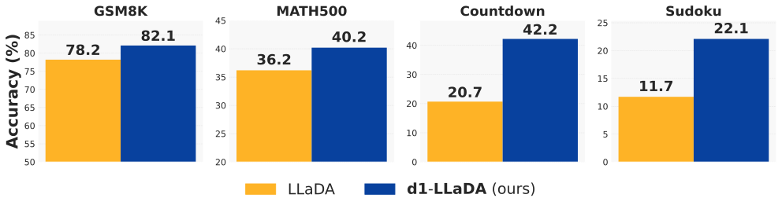
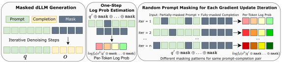
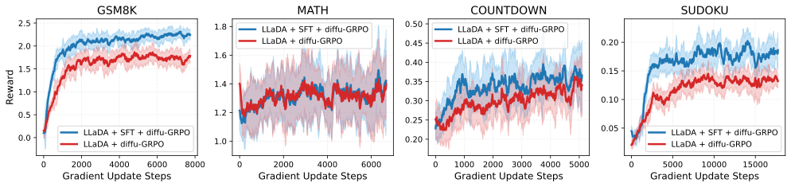
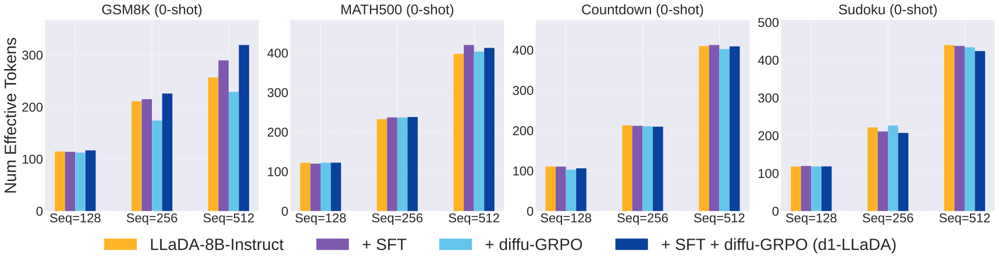
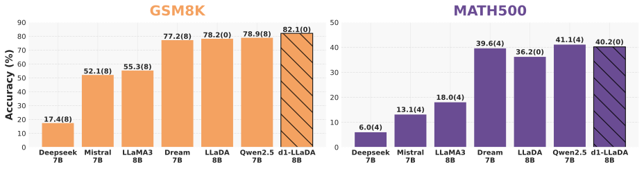
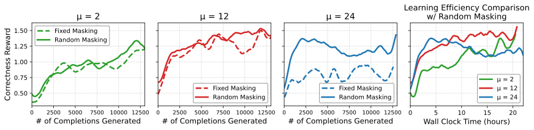
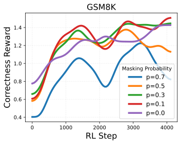

d1：用强化学习提升扩散大语言模型的推理能力
d1: Scaling Reasoning in Diffusion Large Language Models via Reinforcement Learning
阅读状态、进度与收藏只保存在你的浏览器里。本页依据 arXiv v2（2025-06-03）和官方仓库代码。
逐节精读
这部分按论文的章节顺序，用本站自己的话把整篇论文从头讲一遍。读懂某个概念需要的背景知识，会在第一次用到它之前单独讲清楚（青色框）。每个结论都尽量说出“因为什么、所以什么”。论文以 CC BY 4.0 发布，所以原图直接放在讲到它的地方，并说明怎么看；原图没画到的概念，用本站的示意图补上。标“推算”的数字是本站根据论文或官方代码算出来的，不是论文原话。每节末尾有英文原文的链接。
0 导读：这篇论文解决什么问题
2025 年初，DeepSeek-R1 这一类“推理模型”让大家看到：先让语言模型自己写出很多解题过程，再由程序检查最终答案对不对、对了就给奖励，用这种强化学习（RL）反复训练，模型解数学题、做规划题的能力会明显变强。可是这条路线当时只在自回归（AR）模型上走通过，也就是那种从左到右、一个词一个词往后写的模型。
与此同时，另一类语言模型正在追上来：掩码扩散语言模型（masked dLLM）。它生成文字的方式完全不同：先在回答的位置上铺满“空白”（掩码），然后分好几轮，每一轮同时猜出一批空白处的词，越填越完整。LLaDA 8B 是当时规模最大的开源代表，在常见基准上已经和同样大小的 AR 模型相当。但还没有人给它做过 RL 后训练。
难点在于，PPO、GRPO 这些 RL 算法的每一步都要算一个量：当前模型生成这条回答里每个词的对数概率。AR 模型做一次前向计算就能把它全部给出来；掩码扩散模型却给不出来，因为它生成一条回答要走很多步、而且不按固定顺序，精确的概率根本算不动，LLaDA 论文里的近似方法要做 128 次前向计算才能估一条回答。
d1 的回答分两步。第一步是掩码 SFT：用 s1K 这 1000 道带详细解题过程的难题，按扩散模型自己的方式做监督微调。第二步是 diffu-GRPO：把 GRPO 里需要的对数概率换成一个很便宜的估计——把回答整段遮住、把题目也随机遮掉 15% 的词，只做一次前向计算，读出每个位置上“猜中原词”的概率，再把各个词的对数概率直接相加当作整条回答的对数概率（这叫均场近似）。题目被随机遮住的方式每次都不一样，作者发现这相当于给训练加了一点“扰动”，于是同一批采样可以反复更新 12 次而不过拟合，昂贵的采样次数随之减少。
在 LLaDA-8B-Instruct 上，先 SFT 再 diffu-GRPO 得到的 d1-LLaDA，在四个任务上都比原模型高：按各自最好的生成长度比较，GSM8K 从 78.2 到 82.1，MATH500 从 36.2 到 40.2，Countdown 从 20.7 到 42.2，Sudoku 从 11.7 到 22.1。这些数字该怎么打折扣，§4.5 会专门讲。

读完这部分，你应该能回答这几个问题：
- RL 为什么需要逐 token 的对数概率？AR 模型为什么一次前向就能给出，掩码扩散模型为什么不能？
- GRPO 的“组内相对优势”“比值裁剪”“KL 惩罚”各在做什么？
- diffu-GRPO 的“一步估计 + 均场近似”具体近似掉了什么，偏差可能出在哪里？
- 为什么随机遮住题目，就能让同一批采样多更新几次？
- 掩码 SFT 和 diffu-GRPO 各贡献了多少，组合起来又如何？
- 论文里的提升是和什么对照、在什么评测口径下得到的，哪些地方要打折扣？
1 引言：为什么要给扩散语言模型做强化学习
传统的监督微调（SFT）是“照着标准答案抄”：给模型一道题和一份写好的解题过程，训练它逐字复现这份过程。它的上限受制于标准答案的数量和质量，而高质量的解题过程很贵、总量有限。
强化学习换了一种方式：只给题目，让模型自己写出若干份解答；再用一段程序检查每份解答的最终答案是否正确（例如数学题比对数字、编程题跑单元测试），正确就给高分，这个分数叫奖励。训练的目标是让模型以后更常写出高奖励的解答、更少写出低奖励的解答。因为奖励由程序自动判定，这种设定常被称为“可验证奖励”。论文引用的 DeepSeek-R1、Kimi k1.5 就是这样训练出来的，它们在数学推理上达到了和 OpenAI o1 相当的水平。
这里的关键在于“让模型更常写出某份解答”这句话怎么落到参数更新上：需要知道模型当前生成这份解答的概率，并沿着让这个概率变大的方向调参数。下一节会具体讲。
自回归模型像人写字：从左往右，每写一个词都只看前面已经写好的词。掩码扩散语言模型更像填字游戏：先在回答的位置铺满掩码符号 [M]，每一轮让模型同时看整个画布（左右两边都能看，这叫双向注意力），对每个还是 [M] 的位置猜一个词，挑其中最有把握的几个填上，其余继续留空，进入下一轮。几十到几百轮后，画布填满，生成结束。论文把这称为“由粗到细”的生成。开源的 LLaDA 在性能上接近同等规模的 AR 模型，闭源的 Mercury 则展示了很高的生成速度。
论文的出发点很直接：RL 后训练的成功几乎都发生在 AR 模型上，而当时领先的开源扩散模型还没有经历过 RL 后训练，这个方向基本是空白。作者想知道，扩散模型能否同样从 RL 中获益。
为什么不能直接把 PPO 或 GRPO 套上去？因为这两种算法都要计算“当前模型生成这条回答的对数概率”，并且是逐个 token 计算、再按 token 求和。AR 模型按链式法则把一句话的概率拆成“每个词在前文条件下的概率”的乘积，一次前向计算就能同时得到所有这些条件概率。扩散模型的生成是多步、非顺序的，没有这样一个自然的拆分方式，所以这个量不能直接算出来。
为此，论文提出 d1，一个两阶段的后训练框架：
- SFT 阶段：在高质量推理数据 s1K 上做掩码式的监督微调，让模型先学会写带检验、带回溯的解题过程。
- RL 阶段：提出 diffu-GRPO，它在 GRPO 的框架上，用一种只需一次前向计算的对数概率估计代替精确值。估计时对题目做随机掩码，这种随机性起到了正则化的作用，使得每批采样可以做更多次梯度更新，从而减少需要的在线采样次数和总计算时间。作者称这是策略梯度类 RL 第一次被用在掩码扩散语言模型上（§5 会讲这句话的边界）。
实验以 LLaDA-8B-Instruct 为底座，把 d1-LLaDA 与原模型、只做 SFT、只做 diffu-GRPO 三种对照比较。论文报告 d1-LLaDA 在数学和规划四个任务上都优于原模型，在两个规划任务上接近翻倍；它也同时优于只做 SFT 和只做 RL 的版本。此外还有算法设计的消融、定性分析，以及把 diffu-GRPO 用到代码任务上的扩展。
2 预备知识：掩码扩散模型怎么训练和生成，GRPO 怎么更新策略
2.1 掩码扩散语言模型
BERT 的训练方式是完形填空：把一句话里固定 15% 的词换成 [M]，让模型根据左右两边的上下文猜回原词。它学会了“看上下文补词”，但不能从零写出一整段话。
掩码扩散模型把这个想法推广了两点。第一，遮住的比例不再固定，而是每次随机抽一个时间 \(t\in[0,1)\)，每个词以概率 \(t\) 被遮住（LLaDA 用的是 \(\alpha_t=1-t\)，\(\alpha_t\) 表示一个词“没被遮住”的概率）。\(t\) 很小时只遮几个词，\(t\) 接近 1 时几乎全遮住，\(t=1\) 时整句都是 [M]，这个从完整句子逐渐被遮满的过程叫前向过程。第二，生成时从“全是 [M]”出发，一轮一轮地把 [M] 换回词，这叫反向过程，所以它能从零写出整段话。
训练时，模型 \(f_\theta\)（一个双向注意力的 Transformer）看到被遮住一部分的序列 \(x_t\)，对每个被遮住的位置输出“原来是哪个词”的概率分布。LLaDA 的训练损失是：
这里 \(x_0\) 是原始句子，\(x_t^k\) 是第 \(k\) 个位置，\(\mathbf 1[\cdot]\) 表示只对被遮住的位置计算交叉熵。前面的 \(\frac1t\) 是权重：\(t\) 小的时候被遮的词少，每个词的损失就放大一些，让不同遮盖程度的样本贡献大致平衡。这个损失叫负证据下界（NELBO），可以证明它是负对数似然的一个上界。换句话说，最小化它等价于最大化“句子概率的一个下界”，而不是句子概率本身。这一点后面会反复用到：掩码扩散模型训练时就从来没有精确地算过一句话的概率。
生成时，LLaDA 和 d1 都用一种“分块、按置信度填词”的方式。d1 的评测设置是：要生成 \(N\) 个 token，就做 \(N/2\) 步，每步填 2 个词；回答被切成每 32 个 token 一块，只有当前块里的位置可以被填，填满一块才进入下一块（所以块与块之间是从左到右的，块内部则不按顺序）。每一步，模型对当前块里所有 [M] 位置各预测一个词和它的概率，挑概率最高（最有把握）的 2 个位置填上，其余保持 [M]。这种做法叫低置信度重掩码加半自回归解码，作者发现它比完全不分块略好。
这种生成方式带来一个对 RL 至关重要的后果：同一条回答 \(o\)，可以通过很多种不同的“填词顺序”生成出来；而每个词被填上的那一刻，模型看到的上下文（哪些别的词已经填好）也取决于这个顺序。所以“模型生成这条回答的概率”要么是对所有可能顺序求和（数量随长度阶乘式增长），要么至少要把实际走过的那条路径重放一遍，走多少步就要做多少次前向计算。论文的脚注把这一点说得很直白：一个 \(M\) 步的解码过程，相当于把 \(f_\theta\) 复合调用了 \(M\) 次。
LLaDA 论文需要在多选题等任务上比较不同答案的概率，它用的是上面那个下界的蒙特卡洛估计：随机抽一个“遮几个词”的数目，按这个数目随机遮住回答中的若干词，做一次前向计算，把被遮位置的对数概率加权求和；重复很多次取平均。LLaDA 论文报告这样做 128 次就足够稳定。也就是说，估一条回答要 128 次前向计算，得到的还只是一个下界的估计。d1 指出，如果把这 128 次前向都放进 RL 的计算图里求梯度，计算图会非常大，显存和时间都吃不消。
2.2 从策略梯度到 GRPO
把语言模型看成一个“策略” \(\pi_\theta\)：给定问题 \(q\)，它以一定概率 \(\pi_\theta(o\mid q)\) 给出回答 \(o\)。强化学习的目标是让奖励的期望 \(J(\theta)=\mathbb E_{o\sim\pi_\theta}[r(o)]\) 尽量大。经典的 REINFORCE 结论说，这个期望对参数的梯度可以写成
直观地说：采样出一条回答，如果它的奖励高于某个基准 \(b\)，就沿着让 \(\log\pi_\theta(o\mid q)\) 变大的方向走一步，使模型以后更常写出它；低于基准就反过来。减去基准 \(b\) 不改变梯度的期望，但能大大减小随机波动。这里的关键是 \(\nabla_\theta\log\pi_\theta(o\mid q)\)：必须能以可求导的方式算出“模型生成这条回答的对数概率”。
对 AR 模型，这件事很简单：\(\log\pi_\theta(o\mid q)=\sum_{k=1}^{|o|}\log\pi_\theta(o^k\mid q,o^{<k})\)，即每个词在“题目加前面所有词”条件下的对数概率之和。把题目和整条回答一起送进模型做一次前向计算，因果注意力保证第 \(k\) 个位置只看到前面的词，于是所有 \(|o|\) 个条件概率一次全部得到。
生成回答很贵，所以实际训练时会用同一批回答连续更新好几次参数。但第二次更新时，参数已经变了，这批回答不再是“当前模型”采出来的。PPO 的办法是乘上一个修正系数：当前模型与采样时的旧模型给这个词的概率之比 \(\rho=\pi_\theta/\pi_{\theta_{\text{old}}}\)，这叫重要性比值。比值偏离 1 越多，说明模型变化越大，修正越不可靠，于是 PPO 把比值裁剪在 \([1-\varepsilon,1+\varepsilon]\) 之内，防止一步走得太远。PPO 还需要一个和策略差不多大的“价值网络”（critic）来估计每一步的基准，要和策略一起训练，显存和计算开销因此大幅增加。
GRPO（Group Relative Policy Optimization）去掉了价值网络。它对每道题 \(q\) 用旧模型采样一组 \(G\) 条回答 \(\{o_1,\dots,o_G\}\)，用这一组回答奖励的平均值当基准。论文的解读是：组内平均奖励是对“这道题的价值 \(V(q)\)”的 \(G\) 样本蒙特卡洛估计，而每条回答自己的奖励 \(r_i\) 相当于“在这道题上给出这条回答的价值 \(Q(q,o_i)\)”，两者之差就是优势（advantage）。原始 GRPO 还会再除以组内奖励的标准差；d1 沿用 Liu 等人（Dr. GRPO）的观点，认为除以一个随题目变化的非零量会给策略梯度带来偏差，所以不除标准差：
注意优势对一条回答里的所有 token 都一样：整条回答只有一个奖励，它被均摊到每个 token 上。下面用一组具体数字走一遍。
| 回答 | 格式分 | 正确分 | 奖励 \(r_i\) | 优势 \(r_i-\bar r\)（d1） | 再除以标准差（原始 GRPO） |
|---|---|---|---|---|---|
| ① 格式对、答案对 | 0.5 | 2.0 | 2.5 | +1.0 | +0.88 |
| ② 格式对、答案错 | 0.5 | 0 | 0.5 | −1.0 | −0.88 |
| ③ 格式对、答案对 | 0.5 | 2.0 | 2.5 | +1.0 | +0.88 |
| ④ 格式更规整、答案错 | 1.0 | 0 | 1.0 | −0.5 | −0.44 |
| ⑤ 没按格式写、答案错 | 0 | 0 | 0.0 | −1.5 | −1.32 |
| ⑥ 格式对、答案对 | 0.5 | 2.0 | 2.5 | +1.0 | +0.88 |
从这张表能读出 GRPO 的几个性质。第一，三条答对的回答得到同样的正优势，模型会提高写出它们的概率；答错的回答得到负优势，格式也乱的 ⑤ 被压得最重。第二，如果 6 条回答奖励完全相同（都对或都错），所有优势都是 0，这道题就提供不了任何学习信号（只剩 KL 项），算出来的采样白费了。第三，除不除标准差会改变不同题目之间的相对权重：设想另一道题 6 条里 5 条得 2.5、1 条得 2.0，组平均约 2.42，标准差只有约 0.20；不除标准差时那条错的优势是 −0.42，除以标准差后变成 −2.04；而一道“三对三错”（2.5 与 0.5 各三条）的题，除以标准差后每条的优势只有约 ±0.91（均为推算）。也就是说，除以标准差会让“几乎全对”或“几乎全错”的题里那一两条例外被放得特别重。Dr. GRPO 和 d1 认为这种按题目缩放会让梯度有偏，所以去掉了它。
GRPO 其余部分和 PPO 一样：逐 token 的比值裁剪，再加一个对参考模型（通常就是训练起点）的反向 KL 惩罚，防止模型离出发点太远。完整的目标函数是（论文记作 \(\mathcal L\)，但它是要最大化的）：
先看裁剪项 \(\min(\rho A,\operatorname{clip}(\rho)A)\) 在做什么。举一个数：某个 token 在一条好回答里（\(A=+1\)），旧模型给它的概率是 0.20，几次更新后当前模型给到 0.30，比值 \(\rho=1.5\)。若 \(\varepsilon=0.2\)，裁剪后的比值是 1.2，目标取两者较小的 1.2；此时目标对 \(\rho\) 已经是常数，梯度为 0，模型不会再为了这个 token 继续加码。反过来，一条坏回答（\(A=-1\)）里的某个 token 概率已经被压到原来的 0.6 倍，比值低于 \(1-\varepsilon=0.8\)，目标同样变平，不会继续往下压。这就是“每次更新只许走一小步”的含义。
再看 KL 项。它衡量当前模型和参考模型 \(\pi_{\text{ref}}\) 的差距，系数 \(\beta\) 控制约束有多强（官方配置 \(\beta=0.04\)）。实现上，它和原始 GRPO 一样逐 token 估计：记 \(\Delta=\log\pi_{\text{ref}}(o^k)-\log\pi_\theta(o^k)\)，每个 token 的 KL 估计是 \(e^{\Delta}-\Delta-1\)（这个式子总是非负，且当前模型就是参考模型时为 0）。例如当前模型给某个 token 的概率比参考模型高出 \(e^{0.2}\) 倍，\(\Delta=-0.2\)，这个 token 的 KL 估计约为 0.019（推算）。
把 GRPO 拆开以后可以看到，它的每一项都离不开逐 token 的条件概率 \(\pi_\theta(o^k\mid q,o^{<k})\)：比值要它，KL 也要它，而且要的是“当前参数下、可以求梯度”的值。这正是下一节要解决的问题。
英文原文 §2.1 ↗ · §2.2 ↗ · 附录 C 掩码扩散的完整公式 ↗ · 相关：LLaDA 精读页、HybridFlow 精读页（PPO 的四个模型）
3 方法：d1 怎样把预训练的掩码扩散模型变成推理模型
3.0 难点：GRPO 要的两个量，扩散模型都给不出来
论文先把问题说清楚。GRPO 的目标函数里有两处要用到对数概率：一是逐 token 的比值 \(\rho_i^k\)，用来给每个 token 加权；二是整条回答层面的反向 KL。对 AR 模型，两者都由链式法则一次前向得到：
扩散模型则有两重麻烦。第一，它把整条序列当作一个整体来生成，序列的对数概率没有这种按顺序的拆分。第二，即使只想要“每个 token 的对数概率”，也很贵：§2.1 讲过，一次 \(M\) 步的解码等于把 \(f_\theta\) 调用 \(M\) 次，第 \(k\) 个词是在哪一步、看着哪些已填好的词被填上的，取决于整条路径。所以 d1 的第一步是设计一个便宜的估计器（§3.1），第二步把它代入 GRPO（§3.2），第三步是 SFT 配方（§3.3）。
3.1 一步估计与均场近似
这个词来自统计物理和变分推断：一个由很多变量组成的系统，变量之间相互影响，联合分布很难算；均场近似就是假装这些变量彼此独立，用各自的边缘分布相乘来代替联合分布。放到一句话上，就是假装每个词的出现与其他词无关：整句的概率 ≈ 每个位置单独的概率之积，取对数后就是逐词相加。
d1 的估计器由两步组成。
整条回答：均场分解。把 \(\log\pi_\theta(o\mid q)\) 近似为 \(\sum_{k=1}^{|o|}\log\pi_\theta(o^k\mid q)\)。注意条件里只有题目 \(q\)，没有“前面的词”：每个词的概率被当作只依赖题目。
每个 token：一次前向、带题目掩码。生成本来就是从“题目 + 一串 [M]”开始的。为了估计 \(\log\pi_\theta(o^k\mid q)\)，d1 先把题目 \(q\) 的每个 token 以概率 \(p_{\text{mask}}\) 换成 [M]，得到扰动后的题目 \(q'\)；再把它和一串全是 [M] 的回答拼起来，做一次前向计算，读出模型在第 \(k\) 个回答位置上给原词 \(o^k\) 的对数概率：
其中 \(\oplus\) 表示拼接，\(\phi\) 是论文给“估计出来的概率”起的记号。一次前向就同时得到了全部 \(|o|\) 个位置的估计，代价和 AR 模型算一次对数概率相当。题目为什么要随机遮，§3.2 会解释；官方配置里 \(p_{\text{mask}}=0.15\)。

[M]。左栏：回答 \(o\) 是用完整的多步扩散去噪从题目 \(q\) 生成的。中栏：估计时，题目被随机遮掉一部分（\(q'\)），回答整段换成 [M]，一次前向后读出每个回答位置的对数概率（下面四个彩色方块）。右栏：每次梯度更新换一种题目遮法（iter = 1, 2, …, n），同一对题目和回答会得到略有不同的逐 token 估计，图中用同一色系的深浅表示这种差异。作者把这种差异看作一种正则化。这个估计近似掉了什么？下面用一个只有两个 token 的例子说明均场分解丢掉的东西。
题目：“随便说一个美国大城市（用两个英文词回答）”。真实的回答只有两种，各占一半：New York 和 Los Angeles。
| 回答 | 真实的联合概率 | 两个位置都是 [M] 时的边缘概率 | 均场乘积 |
|---|---|---|---|
| New York | 0.5 | P(第 1 位 = New) = 0.5，P(第 2 位 = York) = 0.5 | 0.25 |
| Los Angeles | 0.5 | 0.5 × 0.5 | 0.25 |
| New Angeles | 0 | 0.5 × 0.5 | 0.25 |
| Los York | 0 | 0.5 × 0.5 | 0.25 |
把这个例子推广到 d1 的实际设置，可以把“估计值”和“真实生成”之间的差别分成四层：
- 看不到其他回答词。真实生成时，第 \(k\) 个词被填上的那一刻，同一块里先填的词、前面各块的所有词都已可见；估计时回答整段都是
[M]，每个位置只能凭题目去猜。像示意图里“所以答案是 8”的“8”，真实的解题回答里它往往是在前面的推导（比如“40 ÷ 5 =”）和“答案是”都已经写出来之后才填的，把握很大；估计时模型要在什么推导都看不到的情况下直接猜某个位置是“8”，概率会低得多。 - 词与词当作独立。即上面城市例子里的均场误差：所有位置的估计来自同一个全遮盖状态，相加时忽略了它们之间的依赖。
- 题目也被改了。估计的条件是遮掉了约 15% 的题目 \(q'\)，而生成时模型看到的是完整题目 \(q\)。
- 和采样器无关。真实的“策略”还包括按置信度挑位置、分块、采样温度这些解码规则，估计值完全不反映它们。
本站补充一个观察（论文没有这样写）：把 §2.1 的 LLaDA 训练损失只取 \(t=1\) 那一个时间点，即回答被完全遮住的情形，权重 \(\frac1t=1\)，被遮位置的对数概率之和恰好就是 d1 的 \(\log\phi(o\mid q)\)（只差在题目是否被遮）。所以 d1 的估计可以理解为“ELBO 在最极端的全遮盖时刻上的单个样本”。LLaDA 的蒙特卡洛估计则在很多个遮盖程度上取平均，因此能看到“部分词已知”的情形，但代价是 128 次前向；d1 用偏差换来了速度。
在这个估计下，一次更新到底在推动什么？还用上面那条好回答（§2.2 表中的 ①，优势 \(A=+1.0\)）里的 token “8” 举例，数字为示意。某次内层更新抽到的遮法下，旧模型的一步估计 \(\phi^{\pi_{\theta_{\text{old}}}}(8\mid q')=0.05\)（全遮住时很难猜中），几次更新后当前模型给到 0.07，比值 1.4，还在官方配置的裁剪上限 1.5 以内，所以梯度继续推高它。参考模型仍是 0.05，于是 \(\Delta=\ln0.05-\ln0.07\approx-0.336\)，这个 token 的 KL 估计约 \(e^{-0.336}+0.336-1\approx0.051\)，乘以 \(\beta=0.04\) 后只有约 0.002 的惩罚（均为推算）。换句话说，diffu-GRPO 的梯度直接改变的是“在回答全空、题目略有残缺时，模型猜这个位置是 8 的倾向”。真实解码的每一步用的是同一套参数 \(f_\theta\)，所以这种改变会间接影响实际生成；但影响有多大、方向是否总是一致，论文没有分析。
论文对这个选择的理由很实际：LLaDA 的 128 样本估计会在计算图里留下上百次前向，策略优化变慢、显存占用过大，不适合在线 RL。论文也指出，这个估计器可以直接用到 PPO、REINFORCE 等其他策略梯度方法上。
3.2 diffu-GRPO：把估计代入 GRPO
有了估计器，把 GRPO 里的真实概率逐个换成估计值，就得到 diffu-GRPO 的目标（同样是要最大化的）：
和 GRPO 相比只有两处变化：比值的分子分母都换成了一步估计（而且当前模型、旧模型、参考模型用的是同一个题目遮法 \(q'\)，这样三者是在同一个条件下比较的）；期望里多了一层对遮法 \(q'\) 的随机抽取。回答 \(o_i\) 本身仍然是旧模型用完整的扩散采样生成的。论文的算法 1 可以概括为：
- 把当前模型复制一份作为旧模型 \(\pi_{\theta_{\text{old}}}\)；抽一道题 \(q\)，用旧模型完整地扩散采样 \(G\) 条回答。
- 给每条回答算奖励和优势（组平均做基准，不除标准差）。
- 重复 \(\mu\) 次内层更新：每次重新随机遮一次题目得到 \(q'\)；用当前模型、旧模型、参考模型各做一次一步估计；算目标函数并更新一次参数。
- 回到第 1 步，直到收敛。
内层更新次数 \(\mu\) 的两难。PPO、GRPO 这类算法都会用同一批样本做多次梯度更新，期间题目、回答、旧模型和优势都固定不变。\(\mu\) 太大，模型会在这一小批样本上过拟合；\(\mu\) 太小，收敛就慢。对扩散模型来说，这个取舍更尖锐：每一轮外层迭代都要做完整的多步扩散采样，非常贵，所以很希望每批样本能多用几次。
随机遮题目为什么能缓解这个两难。作者的解释是：每次内层更新都换一种题目遮法，相当于让模型从略有不同的“角度”看同一对题目和回答，这种随机扰动起到正则化的作用；也可以看成一种数据增强，从同一批数据里榨出更多监督信号。论文报告（§4.4 的原文图 5），这让 \(\mu\) 可以从常见的 2 提高到 12 甚至 24 而训练依然稳定，于是收敛所需的外层迭代变少，在线采样次数和总计算时间随之下降。论文强调这种做法是掩码扩散模型特有的：AR 模型的对数概率是确定的，没有“遮法”可换。
- 论文没写、代码给出的超参（
diffu-grpo/slurm_scripts/train.yaml）：每题 \(G=6\) 条回答，\(\mu=12\)，\(\beta=0.04\)，裁剪 \(\varepsilon=0.5\)，题目最长 200 token，回答 256 token、128 个扩散步、块长 32、低置信度重掩码，p_mask_prompt: 0.15。采样温度 yaml 里没有设置，取DiffuGRPOConfig的默认值 0.9；评测则用贪心解码。 - 参考模型是谁。论文说参考策略“通常是初始模型”。代码里参考模型的估计是把 LoRA 适配器关掉后算的（
disable_adapter()），也就是 RL 的起点：只做 RL 时是 LLaDA-8B-Instruct，d1 时是合并了 SFT 权重的模型。yaml 里虽然写了sync_ref_model: True、每 64 步同步，但在官方环境固定的 TRL 版本里，用 LoRA 时不会单独创建参考模型，同步回调因此不起作用（本站读代码得出的结论）。 - 同一种遮法给三个模型。每轮采样后，代码为 \(\mu\) 次内层更新各抽一个随机种子，用同一个种子分别算旧模型和参考模型的估计并缓存，第 \(n\) 次更新时当前模型也用第 \(n\) 个种子。所以第 1 次更新时当前模型和旧模型参数相同、遮法相同，比值从 1 开始（不计 LoRA dropout 带来的随机性）。
- 损失的平均方式。公式是先对每条回答的 token 求平均、再对 \(G\) 条回答求平均；代码是把一个设备上 6 条回答的有效 token（到第一个 EOS 为止）放在一起求平均，长回答的权重因此略大。
3.3 用推理数据做掩码 SFT
s1K 来自 s1（“Simple test-time scaling”）这篇工作：作者从大量数学、科学题中精选出 1000 道多样、有难度的题，每道题配一份由更强模型写出的长推理过程和最终解答。数据集主页说明这些推理过程是从 Gemini 的思考模式中蒸馏的。d1 强调的是这些过程里有“验证中间结果”“走不通时回头重来”这类行为，希望 SFT 能把这种习惯教给 LLaDA。官方代码直接读取 simplescaling/s1K，把推理过程放进 <reasoning>…</reasoning>、最终解答放进 <answer>…</answer>。
SFT 的算法（论文算法 2）就是 LLaDA 自己的 SFT：抽一对题目和回答 \((p_0,r_0)\) 和一个时间 \(t\sim\mathcal U(0,1)\)；题目保持完整，回答的每个 token 以概率 \(t\) 被遮住得到 \(r_t\)；让模型根据“完整题目 + 部分被遮的回答”猜回被遮的词：
训练配置：在 s1K 上训 20 个 epoch，序列长 4096；LoRA 秩 128、缩放系数 256；2 张 A6000，每卡批大小 1、梯度累积 4 步，等效批大小 8；学习率 1e-5，线性衰减、无预热，梯度裁剪 1.0；留出 1% 数据做验证，总共 2460 步。这个步数和数据量吻合：990 条训练数据 ÷ 8 ≈ 124 步/epoch，乘 20 约 2475 步（推算）。
附录 D.2 列出了三个“不注意就训不好”的细节，每一个背后都有原因：
- 截断。s1K 的推理过程很长，只能截到 4096 个 token。可 LLaDA-Instruct 被训练成“不管给多长都要写出完整的句子”，截断的数据会和这个习惯冲突，作者只能接受这个折中。
- 对 PAD 计算损失，并且填充到最大长度。掩码扩散模型的画布长度是固定的，它要学会“写完以后用结束符把剩下的位置填满”，才能正常结束生成；LLaDA 论文也是把结束符当作普通 token 参与训练的。为了加速，常见做法是只把一个批次填充到批内最长样本的长度；但在 GPU 有限、批很小的情况下，这样参与损失的 PAD 太少，模型学不会停下来。所以作者改为一律填充到模型的最大长度。
- 数据难度要和模型能力匹配。较弱的模型需要难易混合的数据才能提升推理；只给过难的数据，模型很容易过拟合，性能反而下降。
英文原文 §3 ↗ · §3.1 ↗ · §3.2 ↗ · 算法 1 ↗ · §3.3 ↗ · 附录 D.2 SFT 细节 ↗ · 相关：旧版拆解：三种 log π 估计的对比
4 实验：SFT、RL 和两者组合各带来多少
4.1 模型、任务与实验设置
底座与四个模型。底座是 LLaDA-8B-Instruct。按 LLaDA 论文，它在 2.3T token 上从头预训练，再用 450 万对数据做过 SFT，但没有经过 RL 一类的后训练；d1 说它“没有经过后训练”，应理解为这个意思。在它上面做三种后训练，加上原模型共四个模型：
- LLaDA-8B-Instruct：原模型，不做任何训练；
- + SFT：只在 s1K 上做掩码 SFT；
- + diffu-GRPO：直接在原模型上做 RL；
- d1-LLaDA：先 SFT，再在 SFT 后的检查点上做 RL。
任务。数学两个、规划两个，另有代码两个作为扩展：
- GSM8K：小学应用题，需要几步算术推理。RL 用它的训练集，评测用官方测试集（1,319 题）。
- MATH500：从高中竞赛题库 MATH 中挑出的 500 题。RL 用 MATH 的训练集。
- Countdown（3 个数）：给 3 个数和一个目标数，用加减乘除把它们凑成目标，例如给 3、5、7，目标 22，答案是 3 × 5 + 7（本站举例）。训练数据取自 TinyZero 项目的数据集中只用 3 个数的题，评测用 256 道合成题。
- 4×4 数独：在 4×4 的格子里填 1–4，每行、每列、每个 2×2 宫各出现一次。训练用一份 100 万道题的合成数据，评测用同一生成器随机生成的 256 道题。
- 代码：HumanEval（164 道手写 Python 题）和 MBPP（论文称 257 道）。RL 用 KodCode-Light-RL-10K（带合成单元测试的通用编程题）。
奖励函数（附录 D.1.1），按任务分别设计，都是“格式分 + 正确分”的组合：
| 任务 | 奖励构成 |
|---|---|
| GSM8K | 五项相加：XML 标签每放对一个 +0.125（结束标签后有多余内容会小额扣分）；宽松格式 0.5；严格格式 0.5；答案是整数 0.5；答案正确 2.0。满分 4.0（推算）。 |
| MATH500 | 格式分：有 answer 标签且里面有 \boxed 得 1.00，有标签无 \boxed 得 0.75，无标签有 \boxed 得 0.50，都没有得 0.25；\boxed 里答案正确再加 2.0。 |
| Countdown | 等式用对了给定的数并等于目标得 1.0；用对了数但没凑出目标得 0.1；否则 0。 |
| Sudoku | 原题空格中被正确填上的比例（只算原本空着的格，不奖励照抄已给出的数字）。 |
| 代码 | XML 格式分（代码放在 answer 标签里再加 0.5，没有用 Python 代码块包起来则为 0）；通过的单元测试比例；若调用 os、sys、subprocess 等被禁用的模块，奖励为 0。 |
RL 训练配置。每个任务单独训练一个模型。用 TRL 库实现，LoRA 秩 128、缩放系数 64，4 比特量化加 FlashAttention-2；8 张 A100-80G，每卡批大小 6、梯度累积 2 步；AdamW（\(\beta_1=0.9,\beta_2=0.99\)，权重衰减 0.1），学习率 3e-6，梯度裁剪 0.2。由于在线采样太慢，RL 全程把回答长度固定为 256 个 token。训练步数（梯度更新次数）分别是 GSM8K 7700、MATH500 6600、Countdown 5000、Sudoku 3800。代码任务用 4 张 RTX A5000，原模型上训 7500 步、SFT 模型上训 9000 步，每卡批大小 2、梯度累积 4 步。
按上面的批大小和官方配置（\(G=6\)、\(\mu=12\)），可以推算每个任务实际采了多少样本：每次梯度更新用 8 卡 × 6 × 2 = 96 条回答，即 16 道题各 6 条；每 12 次更新才重新采样一次。
| 任务 | 梯度更新步数（论文） | 采样轮数 ≈ 步数 ÷ 12 | 见过的题目数 | 生成的回答数 |
|---|---|---|---|---|
| GSM8K | 7,700 | ≈ 642 | ≈ 10,300 | ≈ 61,600 |
| MATH500 | 6,600 | 550 | ≈ 8,800 | ≈ 52,800 |
| Countdown | 5,000 | ≈ 417 | ≈ 6,700 | ≈ 40,000 |
| Sudoku | 3,800 | ≈ 317 | ≈ 5,100 | ≈ 30,400 |
后三列均为推算，假设所有任务都用附录 D.1 的批大小和 train.yaml 的 \(G\)、\(\mu\)。以 GSM8K 为例，它的训练集约 7.5k 题，所以 RL 大约把训练集过了 1.4 遍。

评测口径。所有模型都用 0-shot 提示、贪心解码，分别在生成长度 128、256、512 下评测；解码按 §2.1 的方式，长度 \(N\) 用 \(N/2\) 步、每步 2 个 token、块长 32。检查点的选法不对称：原模型和 +SFT 评的是最终检查点；+diffu-GRPO 和 d1-LLaDA 则从第 600 步开始每 100 步评一次，报告其中最好的结果。
4.2 主要结果
论文表 1 是全文最重要的结果，这里按原文数字重排（粗体为每列最高）：
| 模型 / 生成长度 | GSM8K | MATH500 | Countdown | Sudoku | ||||||||
|---|---|---|---|---|---|---|---|---|---|---|---|---|
| 128 | 256 | 512 | 128 | 256 | 512 | 128 | 256 | 512 | 128 | 256 | 512 | |
| LLaDA-8B-Instruct | 68.7 | 76.7 | 78.2 | 26.0 | 32.4 | 36.2 | 20.7 | 19.5 | 16.0 | 11.7 | 6.7 | 5.5 |
| + SFT | 66.5 | 78.8 | 81.1 | 26.2 | 32.6 | 34.8 | 20.3 | 14.5 | 23.8 | 16.5 | 8.5 | 4.6 |
| + diffu-GRPO | 72.6 | 79.8 | 81.9 | 33.2 | 37.2 | 39.2 | 33.2 | 31.3 | 37.1 | 18.4 | 12.9 | 11.0 |
| + SFT + diffu-GRPO（d1-LLaDA） | 73.2 | 81.1 | 82.1 | 33.8 | 38.6 | 40.2 | 34.8 | 32.0 | 42.2 | 22.1 | 16.7 | 9.5 |
数字为准确率（%）。Sudoku 的“准确率”按官方解析脚本，是所有原题空格中被填对的比例（格子级），不是整盘解对的比例。
从表 1 读出的几条结论，以及每条后面的计数（都可以从表上数出来）：
- diffu-GRPO 单独使用就比 SFT 有效。它在全部 12 个格子里都高于原模型，也都高于 +SFT；而 +SFT 只在 12 格中的 7 格高于原模型，在 Countdown 256（19.5 → 14.5）、GSM8K 128 等格子上反而变差。
- RL 无论从哪个起点出发都有提升。+diffu-GRPO 在所有格子上高于原模型，d1-LLaDA 在所有格子上高于 +SFT，所以无论起点是原模型还是 SFT 后的模型，diffu-GRPO 都带来了提升。
- 组合最好。d1-LLaDA 在 12 格中的 11 格高于只做 RL 的模型，唯一的例外是 Sudoku 512（9.5 对 11.0）。作者称之为两个阶段的协同效应。
- 提升幅度因任务而异。论文给出的 d1-LLaDA 相对原模型的提升是 GSM8K 3.9、MATH500 4.0、Countdown 26.2、Sudoku 10.0 个点。对照表格可以看出，前三个取自长度 512，Sudoku 取自长度 256（推算核对）。作者的解释是数学任务上原模型已经接近饱和，提升空间小；规划任务涉及结构化的约束满足，提升空间更大。
训练只用 256，评测在 128 和 512 上也有效。RL 的在线采样始终是 256 个 token，但表 1 里 128 和 512 两列同样有提升，作者据此认为模型学到的是更一般的推理策略，而不是对某个长度过拟合。他们还用原文图 4 的“有效 token 数”佐证（§4.3）。
一个模型同时训四个任务。表 2 把四个任务的数据合在一起（每个任务抽成同样数量）只训一个模型，评测长度 128 和 256：
| 模型 / 生成长度 | GSM8K | MATH500 | Countdown | Sudoku | ||||
|---|---|---|---|---|---|---|---|---|
| 128 | 256 | 128 | 256 | 128 | 256 | 128 | 256 | |
| LLaDA-8B-Instruct | 68.7 | 76.7 | 26.0 | 32.4 | 20.7 | 19.5 | 11.7 | 6.7 |
| + SFT（s1K） | 66.5 | 78.8 | 26.2 | 32.6 | 20.3 | 14.5 | 16.5 | 8.5 |
| + 合训 diffu-GRPO | 72.4 | 78.2 | 30.2 | 36.6 | 27.7 | 19.5 | 22.9 | 15.7 |
| 合训 d1-LLaDA | 75.1 | 81.1 | 29.8 | 35.4 | 30.1 | 32.8 | 21.9 | 15.4 |
论文的结论是多任务训练“没有牺牲准确率”。逐格对照表 1 的单任务结果，这句话需要细化：合训 d1 在 GSM8K 上与单任务持平或更好（128：75.1 对 73.2；256 都是 81.1），在 Countdown 256 上略好（32.8 对 32.0）；但在 MATH500 上低了 3–4 个点（128：29.8 对 33.8；256：35.4 对 38.6）。合训的 diffu-GRPO（不做 SFT）在 Countdown 256 上是 19.5，和原模型完全一样，而单任务时是 31.3。所以多任务时各任务的收益并不均匀。
代码任务。表 3 在 KodCode-Light-RL-10K 上训练，再在 HumanEval 和 MBPP 上评测：
| 模型 / 生成长度 | HumanEval | MBPP | ||||
|---|---|---|---|---|---|---|
| 128 | 256 | 512 | 128 | 256 | 512 | |
| LLaDA-8B-Instruct | 27.4 | 35.3 | 37.8 | 36.2 | 41.2 | 40.4 |
| + diffu-GRPO | 29.3 | 39.0 | 34.8 | 42.0 | 45.5 | 41.6 |
| 提升 | +1.9 | +3.7 | −3.0 | +5.8 | +4.3 | +1.2 |
| LLaDA-8B-Instruct + SFT（s1K） | 21.3 | 32.3 | 32.9 | 40.1 | 39.7 | 41.2 |
| + diffu-GRPO | 31.1 | 32.9 | 37.8 | 40.5 | 44.7 | 42.8 |
| 提升 | +9.8 | +0.6 | +4.9 | +0.4 | +5.0 | +1.6 |
论文说 diffu-GRPO “持续”提升了代码能力，但表里有一个负数：原模型上做 RL 后，HumanEval 512 从 37.8 降到 34.8。另一个值得注意的现象是 s1K 上的 SFT 明显伤害了 HumanEval（三个长度都下降，128 时从 27.4 降到 21.3），作者的解释是 s1K 几乎没有代码数据，不适合代码任务，寻找合适的 SFT 数据留待以后。代码任务是全文唯一一个“训练数据和评测集来自不同来源”的设置，所以它比数学和规划任务更能说明泛化。
4.3 讨论：自我纠错、生成长度与和其他模型的比较
“顿悟时刻”。在 128 和 256 的长度下，四个模型写出的推理过程看不出明显区别；到 512 时，作者在 +SFT 和 d1-LLaDA 的输出里看到了自我验证和回溯，也就是 DeepSeek-R1 论文所说的 “aha moment”。附录 E 给了几道 GSM8K 题的对照：例如 d1-LLaDA 在一道求百分比的题里先写出 7/20，接着写“似乎算错了，重新检查一遍”，最后得到正确的 35；+SFT 在一道算面包的题里先得出 5，随后自称“这似乎不对”并改成 10。作者的解释是，这些行为是 SFT 阶段从 s1K 的推理过程里学来的。
生成越长，数学越好。在 GSM8K 和 MATH500 上，四个模型都随生成长度增加而变好，从 128 到 256 的提升比 256 到 512 大。论文给的数字是约 7.1 和约 2.5 个点；本站按表 1 的 8 组数（4 个模型 × 2 个任务）重算，平均分别是 7.1 和 2.1（推算）。这和 AR 模型上“测试时多想一会儿就更好”的经验一致。但规划任务不一样：Sudoku 上所有模型都随长度增加而变差；Countdown 上原模型随长度单调下降，而三个训练过的模型都在 512 时最好。作者推测这是因为这些任务需要大量搜索，超出了原模型的能力，更强的底座会让这种“越长越好”更明显。
RL 后思维链没有变长。不同于 DeepSeek-R1 在 RL 中回答越来越长，d1 没有观察到明显的长度增长。原因很直接：RL 阶段的生成长度固定在 256，模型没有机会写得更长（LLaDA-8B-Instruct 的预训练序列可达 4096）。要继续扩展就需要在 RL 中用更长的生成，而当时的采样速度做不到，作者呼吁发展更高效的推理算法。

和其他模型比。原文图 3 把 d1-LLaDA 放进一张同等规模模型的对比图：

这张图需要拆开读。除了 LLaDA 和 d1-LLaDA 是作者自己 0-shot 测的，其他模型的分数都直接取自 Dream 的博客；本站核对了那张表，它比较的是各家的基座模型（只做过预训练），GSM8K 用 8-shot、数学用 4-shot，表头写的是 MATH，没有说明是否就是 MATH500。而 d1-LLaDA 是指令模型，又在 GSM8K 和 MATH 的训练集上专门做过 RL（图注特意注明是“按任务单独训练的版本”）。训练量也不对等：LLaDA 预训练用了 2.3T token，Qwen2.5 的技术报告说它的预训练数据是 18T token。如果换成指令模型比较，差距会完全不同：例如后来 TraceRL 论文报告 Qwen2.5-7B-Instruct 的 MATH500 是 74.0。所以图 3 只能说明 d1 让 LLaDA 在这两个任务上追平或超过了几个基座模型，不能说明扩散模型的推理已经超过同等规模的 AR 模型。
4.4 消融：随机遮盖与遮盖比例

论文从图 5 得出两点结论。第一，随机遮法在三种 \(\mu\) 下都优于固定遮法：\(\mu=24\) 时差距最大，固定遮法的奖励升到 0.7 左右后大部分时间在 0.7–0.95 之间徘徊，随机遮法高得多；\(\mu=12\) 时两者在前半程接近，后半程固定遮法出现一次明显下跌；\(\mu=2\) 时差别不大。第二，按墙钟时间看，\(\mu\) 越大，用更少的时间达到同样的奖励。论文说常规做法通常把 \(\mu\) 限制在 2，而随机遮法让 \(\mu\) 可以开到 12 甚至 24，“保持或提升性能”。
细看第四个小图，这句话需要修正：\(\mu=24\) 的随机遮法在前两三个小时上升最快，大约 4 小时达到峰值后逐渐回落，最后低于 \(\mu=12\)；\(\mu=12\) 在大约 7 小时之后一直领先；\(\mu=2\) 最慢。官方配置最终选的是 12。所以更准确的说法是：在 GSM8K 这一组单次运行里，\(\mu=12\) 加随机遮法在速度和最终奖励之间取得了最好的平衡，\(\mu=24\) 起步快但后劲不足。

作者的解读是：遮盖比例低（0.1、0.3）时保留了大部分题目信息，训练稳定、最终表现更好；比例高（0.5、0.7）时题目被遮得太多，训练不稳定；完全不遮（0.0）虽然没有随机性，却略差一些，这印证了随机遮题目的正则化作用，而且在 \(\mu=12\) 这种内层更新多的设置下尤其有用。最终配置取 0.15。
4.5 结果的份量
这一小节把上面的数字逐项放回它们的对照条件里，说明哪些结论站得住、哪些需要打折扣。
对照是什么，匹配了什么。四个模型共用同一个底座 LLaDA-8B-Instruct，评测都是 0-shot、贪心解码、同样的解码步数和块长，所以“RL 前 vs RL 后”的比较在模型和评测上是匹配的。但有两处不匹配。第一，数据不同：+diffu-GRPO 用的是每个任务自己的训练集（例如 GSM8K 的约 1 万道次题目，推算），而 +SFT 用的是与任务无关的 s1K（1000 道竞赛难题）。所以“RL 比 SFT 有效”同时混合了算法差异和数据差异，论文没有做“在同样的 GSM8K 训练题上做 SFT”的对照。第二，检查点挑选不同：RL 模型在测试集上从几十个检查点里挑最好的，SFT 和原模型只评最终的一个。论文也没有和“同样做 RL 的 AR 模型”比较。
噪声有多大。论文没有报告多次运行或误差范围。用测试集大小可以粗估单次评测的标准误（推算，按二项分布）：GSM8K 1,319 题、准确率约 80% 时约 ±1.1 个点；MATH500 500 题、约 38% 时约 ±2.2 个点；Countdown 256 题、约 35% 时约 ±3.0 个点。候选检查点的个数也可以推算：GSM8K 约 72 个、MATH500 约 61 个、Countdown 约 45 个、Sudoku 约 33 个。在这种噪声下挑最大值，偏高一到两个标准误并不奇怪。据此：
- Countdown 上 RL 带来的 +11.8 到 +26.2 个点远大于噪声，结论可靠。
- GSM8K 上 d1-LLaDA 相对原模型 +3.9 到 +4.5 个点。两次独立评测之差的标准误约 1.6 个点（推算），提升约为它的 2.5–3 倍，方向可信，但其中一部分可能来自检查点挑选。
- MATH500 上 +4.0 到 +7.8 个点，两次评测之差的标准误约 3.1 个点（推算），单看长度 512 那一格（+4.0）并不确凿，但三个长度的方向一致。
- d1-LLaDA 相对只做 RL 的模型，GSM8K 只高 0.2–1.3 个点、MATH500 高 0.6–1.4 个点，在噪声范围以内。“两阶段协同、12 格赢 11 格”这个说法在数学任务上证据并不强；Countdown 512（+5.1）和 Sudoku 128、256（+3.7、+3.8）上差距大一些，但这两个评测集只有 256 题，同样难以单凭一格下结论。
Sudoku 的分数怎么看。按官方解析脚本，Sudoku 的分数是格子级的正确率。一个只会把空格随机填上 1–4 的“模型”，期望就能对 25%（推算）。表 1 里所有模型都低于这个数，最好的 22.1 也一样，说明很多回答根本没有输出可解析的 16 位答案。因此 Sudoku 上的“近乎翻倍”（11.7 → 22.1），很大程度上反映的是模型学会了按格式输出答案，而不是学会了解数独。Countdown 和 Sudoku 的评测集也都和训练数据出自同一个生成器，属于同分布测试。
收益能否迁移到其他长度和任务。长度上，结论比较稳：RL 只在 256 上训练，128 和 512 上 +diffu-GRPO 都高于原模型（12/12）。任务上，证据有限：每个任务单独训练，论文没有测“在 GSM8K 上训练的模型在 MATH500 上表现如何”；多任务合训（表 2）在 MATH500 上比单任务低 3–4 个点；唯一的跨来源测试是代码（在 KodCode 上训练，在 HumanEval / MBPP 上评测），12 个格子里 11 个为正、1 个为 −3.0，提升幅度从 +0.4 到 +9.8 不等。
采样量和计算量。每个任务的 RL 大约生成 3 万到 6 万条回答（推算，见 §4.1），全部用 LoRA 加 4 比特量化在 8 张 A100 上完成。采样时每步填 2 个 token、256 个 token 要 128 步，这是限制回答长度的直接原因。论文的效率论证（\(\mu\) 越大越省时间）只来自 GSM8K 上的一组墙钟时间曲线。
近似本身的偏差。论文没有单独评估一步估计的误差，也没有和更准确但更贵的估计（如 LLaDA 的 128 样本估计）在同样设置下比较 RL 效果。后续工作给出了一些旁证：Flexibility Trap 在统一的协议下（全参数微调、每步解码 1 个 token、长度 256）重新训练了 d1，GSM8K 为 83.8、MATH500 为 39.2，而他们改用从左到右的精确似然做标准 GRPO 后分别达到 89.1 和 45.1。这说明在 LLaDA 上，“估计更准、和采样器更一致”的方法还能带来明显的提升空间（详见“后来怎么样了”）。
英文原文 §4 ↗ · 表 1 ↗ · 表 2 ↗ · 表 3 ↗ · §4.3 ↗ · §4.4 ↗ · 附录 D 实验细节 ↗ · 附录 E 定性样例 ↗
5 相关工作、局限与结论
扩散语言模型这条线。扩散模型先在图像上取得成功，用到文本上的难点是文字是离散的。早期做法是在连续的文本表示上做扩散；后来掩码扩散被确立为离散扩散的一个有效特例（D3PM、MDLM、MD4 等），并被不断放大：DiffuLLaMA 用预训练的 LLaMA 权重初始化扩散模型；Diffusion of Thoughts 等工作研究扩散模型能否写思维链，在小模型上展示了它在“倒序”类任务上的优势，但生成的推理过程不会自我纠错；Block Diffusion 按块生成、块内扩散，支持可变长度和 KV 缓存；LLaDA 和 Dream 则在大规模上追平了同等规模的 AR 模型。论文的判断是，这些工作都还没有用 RL 来增强。
用 SFT 和 RL 提升推理这条线。SFT 方面，有的工作用大规模推理数据（MetaMath、NuminaMath、OpenWebMath），有的发现少量精选数据反而更好（LIMO、s1、LIMA）。Chu 等人指出 SFT 得到的推理往往依赖记忆，而 RL 更能迁移到新情形。GRPO 用组内得分估计优势，省掉了价值网络；DeepSeek-R1-Zero 表明不做 SFT、只做 RL 也能涌现出带自我反思的长推理；反过来，R1 的推理过程又被整理成 OpenThoughts、OpenR1-Math 这类数据，用来蒸馏小模型。
“第一个”的边界。在离散扩散模型上做策略梯度并非完全没有先例：Zekri 和 Boullé（2025 年 2 月）提出过一个基于具体分数匹配（concrete score matching）的策略梯度框架，但它依赖梯度流计算、不针对掩码目标，而且用在较小的模型上。所以 d1 的“第一个”准确地说是：第一个面向大规模掩码扩散语言模型、并配合 SFT 一起做推理增强的策略梯度方法。
局限（附录 A）。LLaDA 要求预先固定生成长度，所以 diffu-GRPO 也只能在固定长度下训练。这可能妨碍模型找到最合适的推理路径：既可能是更简洁的解法，也可能是像 DeepSeek-R1 那样更长的思维链。作者建议把 diffu-GRPO 用到 Block Diffusion 这类支持可变长度生成的模型上，以便做长上下文的 RL。§4.3 也说了同样的问题：采样太慢，RL 时只能用 256 个 token。
结论。作者总结了三点：在推理数据上做 SFT 能提升性能，并在长生成时出现“顿悟时刻”；diffu-GRPO 是一种高效的扩散模型策略梯度方法，在各基准上都优于 SFT；两者组合的 d1 配方相对原模型提升最大。未来的工作应当发展更高效的解码策略，以便在 RL 中使用更长的生成。
英文原文 §5 ↗ · §6 ↗ · 附录 A 局限 ↗ · 附录 B 相关工作 ↗ · 相关：MDLM 精读页、Block Diffusion 精读页、Dream 精读页
后来怎么样了
d1 发表后，“怎样给掩码扩散模型做 RL”迅速成为一个活跃的方向，后续工作大多以 d1（diffu-GRPO）作为对照基线，并且几乎都从同一个问题入手：对数概率到底该怎么估。下面只列本站核对过摘要或正文的工作。
估计器的改进
- LLaDA 1.5 / VRPO（arXiv 2505.19223，2025 年 5 月）：LLaDA 团队没有用 d1 的一步估计，而是做离线的偏好优化（DPO 类），老老实实用 ELBO 估计似然，并分析了这种估计的方差如何影响训练，用“最优分配蒙特卡洛预算”和“对偶采样”降低方差。摘要报告相对只做 SFT 的 LLaDA，GSM8K +4.7、HumanEval +3.0、MBPP +1.8、IFEval +4.0、Arena-Hard +4.3。见旧版拆解中的 LLaDA 1.5 部分。
- MMaDA 的 UniGRPO（arXiv 2505.15809，NeurIPS 2025）：明确批评了 d1 的两点：随机遮题目和实际任务无关（问答时题目总是完整可见），回答整段遮住则忽略了扩散的多步特性。UniGRPO 改为题目不遮、回答按随机比例部分遮住；论文在同一个 MMaDA 检查点上对比两者的 GSM8K 训练奖励曲线，UniGRPO 更高。见 MMaDA 精读页。
- DiffuCoder 的 coupled-GRPO（arXiv 2506.20639）：为训练中的回答构造一对互补的掩码，降低逐 token 对数概率估计的方差，在 EvalPlus 上提升 4.4%。见旧版代码扩散模型页。
- wd1（arXiv 2507.08838，ICLR 2026）：指出 d1 这类 GRPO 式方法每一步都要近似当前、旧、参考三个策略的似然，重要性比值因此误差和方差都大；它把 RL 目标改写成加权对数似然，不再需要重要性比值，只需近似当前策略一项。摘要称在 LLaDA-8B 上优于 d1 且计算更少，扩展版 wd1++ 只训 20 步就在 MATH500 上达到 44.2%、GSM8K 84.5%。
- SPG（arXiv 2510.09541，ICLR 2026；d1 第一作者 Siyan Zhao 是合作者之一）：认为 ELBO 这类只给出下界的“单侧”近似会给策略梯度带来明显偏差，于是同时用真实对数似然的上界和下界把它“夹住”。摘要称它明显优于基于 ELBO 或一步估计（即 d1 的做法）的基线，相对当时最好的扩散模型 RL 方法，在 GSM8K、MATH500、Countdown、Sudoku 上分别提升 3.6、2.6、18.4、27.0 个点，正好是 d1 用的四个任务。
- ESPO（arXiv 2512.03759）：把整条回答看成一个动作，用 ELBO 作为序列级似然的代理，并对重要性比值做逐 token 归一化；摘要称在 Countdown 上提升 20–40 个点。
让训练与实际采样器一致
- TraceRL / TraDo（arXiv 2509.06949）：§3.1 讲过，d1 的估计和真实的解码路径无关。TraceRL 改为沿着模型实际推理时走过的轨迹计算概率，并训练一个扩散价值模型来稳定训练；它也用到了按块生成、可以缓存的块扩散底座。摘要报告 TraDo-8B-Instruct 在数学推理上相对 Qwen2.5-7B-Instruct 有 6.1% 的相对提升，长思维链版本在 MATH500 上相对提升 18.1%。见旧版拆解中的 TraceRL 部分。
- The Flexibility Trap / JustGRPO（arXiv 2601.15165）：更进一步，认为 RL 时根本不必保留“任意顺序生成”这种灵活性，干脆按从左到右定义精确似然、直接套用标准 GRPO，仍保留并行解码能力。论文在统一协议（全参数微调、每步 1 个 token、长度 256）下重新训练了几个基线：d1 为 GSM8K 83.8、MATH500 39.2，JustGRPO 为 89.1、45.1。见旧版“任意顺序的利与弊”页。
同一作者的后续
- IGPO（arXiv 2509.10396，Siyan Zhao 等）：针对 GRPO 里“一组回答全错、优势全为 0、梯度白算”的问题（§2.2 的例子），利用扩散模型能“填空”的特点，在在线采样时插入部分标准推理过程来引导探索；同时用改写得更简洁的推理过程做 SFT。摘要称在 GSM8K、MATH500、AMC 上取得了全注意力掩码扩散模型的最好结果。作者主页显示它和 SPG 都被 ICLR 2026 接收。
回头看，d1 的贡献主要在于第一次把“掩码扩散模型 + GRPO + 可验证奖励”这套流程完整跑通，并开源了代码，给后来者提供了一个可复现的基线；它的一步估计本身则很快被更准确或更一致的方法取代。想看 d1、LLaDA 1.5、TraceRL 三种估计方式的并排对比和配套简答题，见旧版结构拆解页。
作者
单位按论文署名。背景只列可公开查证的信息：作者主页、实验室与机构页面。
影响力
- 引用：见页首（Semantic Scholar 快照）。
- 发表：NeurIPS 2025 主会（论文集页面）；第一作者主页称为 spotlight。arXiv v1 发布于 2025-04-16，v2 于 2025-06-03 更新。
- 开源：dllm-reasoning/d1 有 459 个 star、54 个 fork（截至 2026-10-19），Apache-2.0 许可；包含掩码 SFT、diffu-GRPO 训练脚本（基于 TRL）、评测代码和原模型的评测输出。
- 作为基线：上文列出的 wd1、SPG、ESPO、Flexibility Trap 等工作都把 d1 放进对比表；Flexibility Trap 还在统一协议下重新训练了它。
延伸阅读
- 相关精读：Token Ordering、LLaDA 1.5、DiffuCoder、TraceRL、灵活性陷阱
- 旧版结构拆解：dLLM 的强化学习（d1、LLaDA 1.5、TraceRL），其中 diffu-GRPO 的组件拆解
- LLaDA 精读页：d1 的底座，掩码扩散的训练目标和采样方式；旧版 LLaDA 拆解页
- MMaDA 精读页：UniGRPO 对 d1 遮盖方式的改进
- Block Diffusion 精读页：作者在局限里建议的可变长度底座
- Mercury 精读页：Grover 联合创办的 Inception 的商用扩散模型
- HybridFlow 精读页 与 旧版 RL 训练系统页：AR 模型上 PPO / GRPO 的训练系统
- 代码扩散模型（DiffuCoder 的 coupled-GRPO） · 任意顺序的利与弊（Flexibility Trap）
- 返回论文书架
原文：Siyan Zhao, Devaansh Gupta, Qinqing Zheng, Aditya Grover. d1: Scaling Reasoning in Diffusion Large Language Models via Reinforcement Learning. arXiv:2504.12216（v1 2025-04-16，v2 2025-06-03），NeurIPS 2025。论文以 CC BY 4.0 许可发布；本页的原文图 1–7 取自 arXiv HTML 版（v2）的图片文件，未做修改，版权归原作者。本页是对论文的中文精读笔记，正文与示意图由本站撰写和绘制，并非翻译；数字与结论以原文为准，标“推算”的为本站计算，标“读图估计”的为本站从原图读出的近似值。官方代码引自 dllm-reasoning/d1（Apache-2.0）。